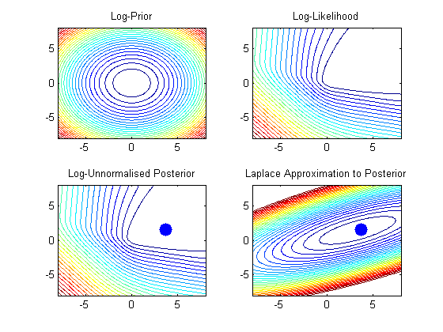
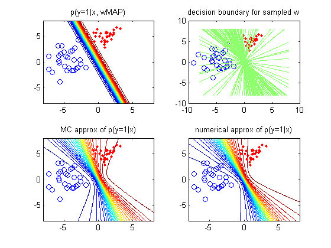

Example of the laplace approximation for logistic regression
Based on code written by Mark Girolami
Contents
setSeed(0);
We generate data from two Gaussians:
x|C=1 ~ gauss([1,5], I) x|C=0 ~ gauss([-5,1], 1.1I)
N=30;
D=2;
mu1=[ones(N,1) 5*ones(N,1)];
mu2=[-5*ones(N,1) 1*ones(N,1)];
class1_std = 1;
class2_std = 1.1;
X = [class1_std*randn(N,2)+mu1;2*class2_std*randn(N,2)+mu2];
t = [ones(N,1);zeros(N,1)];
alpha=100; %Variance of prior (alpha=1/lambda)
Limits and grid size for contour plotting
Range=8; Step=0.1; [w1,w2]=meshgrid(-Range:Step:Range,-Range:Step:Range); [n,n]=size(w1); W=[reshape(w1,n*n,1) reshape(w2,n*n,1)]; f=W*X'; Log_Prior = log(gausspdf(W, zeros(1,D), eye(D).*alpha)); Log_Like = W*X'*t - sum(log(1+exp(f)),2); Log_Joint = Log_Like + Log_Prior; f1 = figure(); J=2;K=2; subplot(J,K,1) contour(w1,w2,reshape(-Log_Prior,[n,n]),30); title('Log-Prior'); subplot(J,K,2) contour(w1,w2,reshape(-Log_Like,[n,n]),30); title('Log-Likelihood'); subplot(J,K,3) contour(w1,w2,reshape(-Log_Joint,[n,n]),30); title('Log-Unnormalised Posterior') hold on % Identify the parameters w1 & w2 which maximise the posterior (joint) [i,j]=max(Log_Joint); plot(W(j,1),W(j,2),'.','MarkerSize',40); % Compute the Laplace Approximation model = logregBinaryFitL2IRLS(X, t, 1/alpha, false); wMAP = model.w; C = model.C; Log_Laplace_Posterior = log(gausspdf(W, wMAP', C)+eps); subplot(J,K,4); contour(w1,w2,reshape(-Log_Laplace_Posterior,[n,n]),30); hold on plot(W(j,1),W(j,2),'.','MarkerSize',40); title('Laplace Approximation to Posterior') % wMAP % Plot the predictive distribution for logistic regression f2 = figure(); subplot(2,2,1) grid = W; % grid of x1, x2 valyes pred = 1./(1+exp(-grid*wMAP)); contour(w1,w2,reshape(pred,[n,n]),30); hold on plot(X(find(t==1),1),X(find(t==1),2),'r.'); plot(X(find(t==0),1),X(find(t==0),2),'bo'); title('p(y=1|x, wMAP)') % Samples subplot(2,2,2) plot(X(find(t==1),1),X(find(t==1),2),'r.'); hold on plot(X(find(t==0),1),X(find(t==0),2),'bo'); predMean = zeros(n*n,1); S = 100; for i=1:S wsamp = gaussSample(struct('mu', wMAP', 'Sigma', C))'; pred = 1./(1+exp(-grid*wsamp)); predMean = predMean + pred; contour(w1,w2,reshape(pred,[n,n]),[0.5 0.5]); end title('decision boundary for sampled w') % MC subplot(2,2,3) predMean = predMean / S; contour(w1,w2,reshape(predMean,[n,n]),30); hold on plot(X(find(t==1),1),X(find(t==1),2),'r.'); plot(X(find(t==0),1),X(find(t==0),2),'bo'); title('MC approx of p(y=1|x)') % Numerical subplot(2,2,4) pred = logregPredictive(grid, wMAP, C); contour(w1,w2,reshape(pred,[n,n]),30); hold on plot(X(find(t==1),1),X(find(t==1),2),'r.'); plot(X(find(t==0),1),X(find(t==0),2),'bo'); title('numerical approx of p(y=1|x)') 